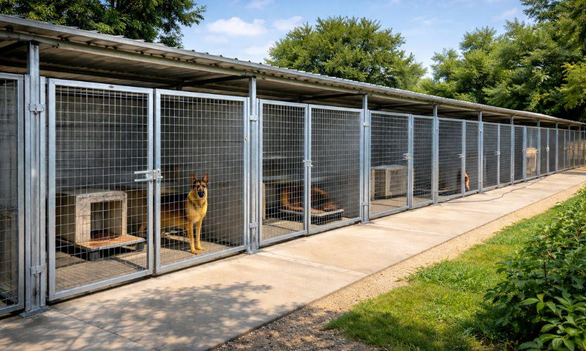

Tipo de voluntariado
Passeios e socialização - Meio período

Passeios e socialização - Meio período
Osasco, SP
17/04/2027
Petz Mania
Estamos em busca de pessoas que gostem de animais e queiram contribuir com o bem-estar dos cães acolhidos pela instituição.
O voluntário ajudará nos passeios, nas atividades de socialização e nos momentos de interação com os animais. Também poderá apoiar a equipe na organização dos espaços utilizados durante as atividades.
Não é necessário ter experiência anterior, mas é importante ter responsabilidade, paciência, atenção às orientações da equipe e carinho no contato com os animais.